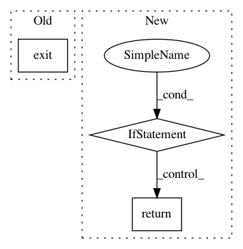

c786913462decebc4157ac3e8d2ec08303021adc,lib/streamlit/config.py,,get_s3_option,#Any#,155
Before Change
LOGGER.debug("Trying to get bucket option")
LOGGER.debug("s3.nothing -> %s" % get_option("s3.nothing"))
import sys
sys.exit(-1)
if option == "profile":
return get_option("storage.s3")["profile"]
After Change
return get_option(new_option)
elif old_option is None:
return None
elif get_option(old_option) is None:
return None
else:
LOGGER.warning(f"DEPRECATION WARNING: Please update ~/.streamlit/config.yaml by renaming "{old_option}" to "{new_option}".")
return get_option(old_option)
In pattern: SUPERPATTERN
Frequency: 3
Non-data size: 3
Instances
Project Name: streamlit/streamlit
Commit Name: c786913462decebc4157ac3e8d2ec08303021adc
Time: 2018-07-02
Author: adrien.g.treuille@gmail.com
File Name: lib/streamlit/config.py
Class Name:
Method Name: get_s3_option
Project Name: streamlit/streamlit
Commit Name: cf2e5c02c448c6f25136a4cd1b89e7f0ba1a3d37
Time: 2018-07-06
Author: adrien.g.treuille@gmail.com
File Name: lib/streamlit/config.py
Class Name:
Method Name: get_s3_option
Project Name: tensorlayer/tensorlayer
Commit Name: 741ad9fb33a98023d76c6b962ae77183745d4ffa
Time: 2019-01-17
Author: jingqing.zhang15@imperial.ac.uk
File Name: tensorlayer/models/core.py
Class Name: Model
Method Name: __call__